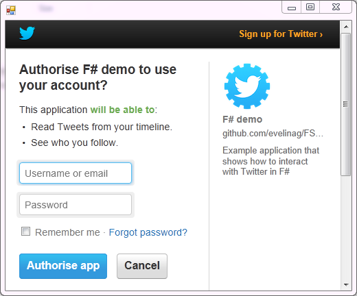

F# Data Toolbox: Twitter type provider
The Twitter type provider makes Twitter data easily accessible by providing a light wrapper around the Twitter API.
Connecting to Twitter
Twitter requires developers to register their applications to gain access to its API. You have to register your application at Twitter Apps. After registration, Twitter provides API key and API secret to authenticate the application.
You can use FSharp.Data.Toolbox in dotnet interactive notebooks in Visual Studio Code or Jupyter, or in F# scripts (.fsx files), by referencing the package as follows:
// Use one of the following two lines
#r "nuget: FSharp.Data.Toolbox.Twitter" // Use the latest version
#r "nuget: FSharp.Data.Toolbox.Twitter,0.20.2" // Use a specific version
#r "nuget: FSharp.Data"
open FSharp.Data.Toolbox.Twitter
open FSharp.Data
let key = "mKQL29XNemjQbLlQ8t0pBg"
let secret = "T27HLDve1lumQykBUgYAbcEkbDrjBe6gwbu0gqi4saM"
There are two types of possible connections to Twitter, application-only and full OAuth authentication. They provide different access rights and different number of allowed requests per time window.
Connecting with application-only authentication
The application-only authentication provides access that's limited to data reachable without the full user context. For example, it allows accessing friends and followers and searching in tweets. This is how the application obtains acess credentials:
let twitter = Twitter.AuthenticateAppOnly(key, secret)
Connecting with OAuth
This method of access provides full user context for the application. Compared to application-only access, it can also access Streaming, search for users and post tweets on behalf of the user.
To connect with OAuth, we first create a Twitter connector. with your user name and password. You'll get a PIN that you use as an argument for the Connect function. This user authentication allows full access to Twitter APIs.
let connector = Twitter.Authenticate(key, secret)
// Run this part after you obtain PIN
let twitter = connector.Connect("8779691")

After connecting to Twitter, you can call methods to access Twitter users, list followers and friends, search for tweets and access the global Twitter stream. All the methods send http requests to Twitter and return JSON documents. They are parsed using JSON type provider, which allows to access individual properties.
Accessing friends and followers
The following examples show how to access lists of followers and friends (followed accounts). Users can be identified either by their Twitter name, or by their user ID number.
// Get a list of ID numbers of friends and followers
// for the current signed-in user
// (requires full authentication)
let friends = twitter.Connections.FriendsIds()
let followers = twitter.Connections.FollowerIds()
printfn "Number of friends: %d" (friends.Ids |> Seq.length)
printfn "Number of followers: %d" (followers.Ids |> Seq.length)
// Get a list IDs of friends and followers for a specific user
let followersFSorg = twitter.Connections.FriendsIds(userId=880772426L)
let friendsFSorg = twitter.Connections.FollowerIds(screenName="fsharporg")
// Get information about connection between specific users
let fs = twitter.Connections.Friendship(880772426L, 94144339L)
fs.Relationship.Source.ScreenName
fs.Relationship.Target.ScreenName
fs.Relationship.Source.Following
fs.Relationship.Source.FollowedBy
We can also search for information about a list of users, specified either by IDs or by their screen names. It's possible to search for up to 100 users at a time.
let friendInfos = twitter.Users.Lookup(friends.Ids |> Seq.truncate 100)
for friend in friendInfos do
printfn "%s (@%s)\t\t%d" friend.Name friend.ScreenName friend.Id
Searching for tweets
We can search Twitter for tweets using keywords. The following snippet shows how to search for tweets containing the #fsharp tag.
let fsharpTweets = twitter.Search.Tweets("#fsharp", count=100)
for status in fsharpTweets.Statuses do
printfn "@%s: %s" status.User.ScreenName status.Text
Accessing timelines
Let's look at how to access Twitter timelines. Timelines show a stream of tweets from followed accounts.
We can access timelines for specific users, or the home timeline of the current signed-in user.
// Access home timeline
// (requires full user authentication)
let home = twitter.Timelines.HomeTimeline()
// Timeline of a specific user, up to a specified number of tweets
let timeline = twitter.Timelines.Timeline("fsharporg", 10)
We can display the Timeline in a web browser. We first create a web browser window. Then we download timeline for a specific user, in this case it's @fsharporg. Finally, we display individual tweets in the web browser.
// Display timeline
let timeline = twitter.Timelines.Timeline("fsharporg")
for tweet in timeline do
printfn $"{tweet.User.Name}: {tweet.Text}"
Output:
|
// Access mentions timeline
// (requires full user authentication)
let mention = twitter.Timelines.MentionTimeline()
for tweet in mention do
printfn $"{tweet.User.Name}: {tweet.Text}"
Streaming data
Streaming allows access to live Twitter data, as they're posted. To access Streaming API, the application must have full user authentication.
If we reuse the web browser window created in the previous code sample, we can display a random sample of tweets in the following way.
// Display stream with live data
let subscribe f obs =
let ctx = System.Threading.SynchronizationContext.Current
if ctx = null then obs |> Observable.subscribe f
else obs |> Observable.subscribe (fun v -> ctx.Post((fun _ -> f v), null))
let sample = twitter.Streaming.SampleTweets()
sample.TweetReceived |> subscribe (fun status ->
match status.Text, status.User with
| text, user ->
printfn $"{user.Name}: {text}"
| _ -> () )
sample.Start()
sample.Stop()
We can also search the Twitter stream for a specific hashtag or phrase. The following code will filter all tweets that contain the word "fsharp" from the global stream of tweets.
// Display live search data
let search = twitter.Streaming.FilterTweets ["fsharp"]
sample.TweetReceived |> subscribe (fun status ->
match status.Text, status.User with
| text, user ->
printfn $"{user.Name}: {text}"
| _ -> () )
search.Start()
search.Stop()
namespace FSharp
--------------------
namespace Microsoft.FSharp
namespace FSharp.Data
--------------------
namespace Microsoft.FSharp.Data
example fast binder url: https://mybinder.org/v2/gh/fsprojects/fsharp.formatting/master?urlpath=git-pull?repo=https:/nhirschey.github.com/teaching/gh-pages/fundamentals.ipynb
type Twitter = new : context:TwitterContext -> Twitter member RequestRawData : url:string * query:(string * string) list -> string static member Authenticate : consumer_key:string * consumer_secret:string -> TwitterConnector static member AuthenticateAppOnly : consumer_key:string * consumer_secret:string -> Twitter static member AuthenticateAppSingleUser : consumer_key:string * consumer_secret:string * access_token:string * access_secret:string -> Twitter member Connections : Connections member Search : Search member Streaming : Streaming member Timelines : Timelines member Trends : Trends ...
--------------------
new : context:TwitterContext -> Twitter
<summary>Print to <c>stdout</c> using the given format, and add a newline.</summary>
<param name="format">The formatter.</param>
<returns>The formatted result.</returns>
<summary>Contains operations for working with values of type <see cref="T:Microsoft.FSharp.Collections.seq`1" />.</summary>
<summary>Returns the length of the sequence</summary>
<param name="source">The input sequence.</param>
<returns>The length of the sequence.</returns>
<exception cref="T:System.ArgumentNullException">Thrown when the input sequence is null.</exception>
member Users.Lookup : userIds:seq<int64> -> JsonProvider<...>.Root []
<summary>Returns a sequence that when enumerated returns at most N elements.</summary>
<param name="count">The maximum number of items to enumerate.</param>
<param name="source">The input sequence.</param>
<returns>The result sequence.</returns>
<exception cref="T:System.ArgumentNullException">Thrown when the input sequence is null.</exception>
member Timelines.Timeline : userId:int64 * ?count:int * ?maxId:int64 -> JsonProvider<...>.Root []
type SynchronizationContext = new : unit -> unit member CreateCopy : unit -> SynchronizationContext member IsWaitNotificationRequired : unit -> bool member OperationCompleted : unit -> unit member OperationStarted : unit -> unit member Post : d: SendOrPostCallback * state: obj -> unit member Send : d: SendOrPostCallback * state: obj -> unit member SetWaitNotificationRequired : unit -> unit member Wait : waitHandles: nativeint [] * waitAll: bool * millisecondsTimeout: int -> int static member SetSynchronizationContext : syncContext: SynchronizationContext -> unit ...
<summary>Provides the basic functionality for propagating a synchronization context in various synchronization models.</summary>
--------------------
System.Threading.SynchronizationContext() : System.Threading.SynchronizationContext
<summary>Gets the synchronization context for the current thread.</summary>
<returns>A <see cref="T:System.Threading.SynchronizationContext" /> object representing the current synchronization context.</returns>
<summary>Contains operations for working with first class event and other observable objects.</summary>
<category index="3">Events and Observables</category>
<summary>Creates an observer which subscribes to the given observable and which calls the given function for each observation.</summary>
<param name="callback">The function to be called on each observation.</param>
<param name="source">The input Observable.</param>
<returns>An object that will remove the callback if disposed.</returns>